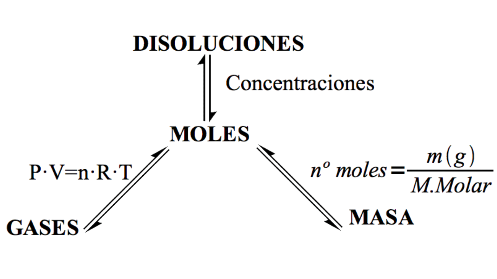

<h1 id="page-title-node-content" class="page-title" data-testid="page-title" style="accent-color: rgb(11, 161, 161); background-color: rgb(255, 255, 255);">Cálculos estequiométricos</h1>
📐 Cálculos estequiométricos
Los cálculos estequiométricos permiten determinar la cantidad de reactivo o de producto que interviene en una reacción química.
¿Qué son?
Los cálculos estequiométricos relacionan las cantidades de las sustancias que participan en una reacción química utilizando la información de la ecuación química ajustada.
Pasos generales
- Ajustar la reacción química.
- Pasar la cantidad conocida (suelen ser datos de masas o volúmenes de reactivos o productos) a moles, haciendo uso de la masa molecular.
- Usar la proporción de la ecuación química, es decir usar los coeficientes estequiométricos.
- Convertir a la unidad pedida (gramos, moléculas, litros…) usando de nuevo la masa molecular.

Ejemplo resuelto
Problema. ¿Cuántos gramos de CO2 se forman al reaccionar 26,3 g de CH4 con oxígeno?
1) Ecuación química ajustada
CH4 + 2 O2 → CO2 + 2 H2O
2) Pasamos de gramos de CH4 a moles
| 26,3 g CH4 × |
|
= 1,64 mol CH4 |
3) Usamos la proporción de la ecuación química "para movernos por la reacción química"
| 1,64 mol CH4 × |
|
= 1,64 mol CO2 |
4) Pasamos de moles de CO2 a gramos
| 1,64 mol CO2 × |
|
= 72,1 g CO2 |
📌 Idea clave
En los cálculos estequiométricos siempre se pasa primero a moles, se utiliza la proporción de la ecuación química ajustada y después se convierte a la unidad pedida.